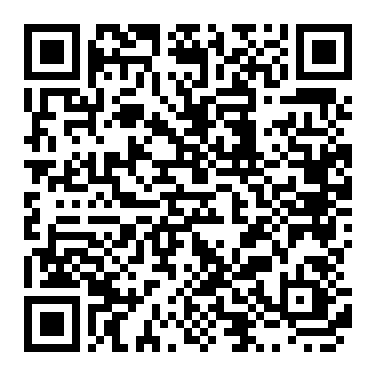

Servers
The build server that turns the source code into phone images, and the server that passes encrypted messages between phones.
Free software
OBSIDIAN is free software under the GPL-3.0 licence. Anyone can use it, study it, change it and share it. There is no subscription, no advertising and nothing sold about you, so it is paid for by the people who want it to exist. As the project grows, donations are what keep it going.
The build server that turns the source code into phone images, and the server that passes encrypted messages between phones.
Every model has to be built and tested on the real phone before it is listed, starting with the Pixel 8.
Time spent on the operating system, on Obsidian Chat, and on the fixes that keep both secure.
We accept Monero, which keeps the sender and the amount private. Scan the code with a Monero wallet, or copy the address below. Any amount helps.

8BK5mayeFYHg6FbwUXkk6whnt1C35KDB1fpWodMYU2jyh4JMwXNbaH3EkvivQs2dbfNu8kyJSv7k5d8TRTvzmePV4z2RU2a
Only send to the address shown on this page, and check it carefully before you send. Monero payments cannot be reversed.
OBSIDIAN is free for everyone either way. Giving does not unlock features, and not giving does not take any away.
Monero does not tell us who sent a donation, so there is no list of donors for us to keep, lose or be asked to hand over.